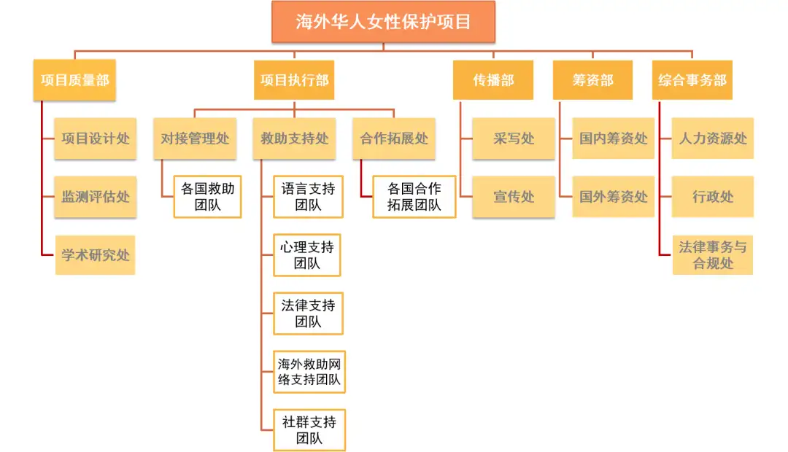
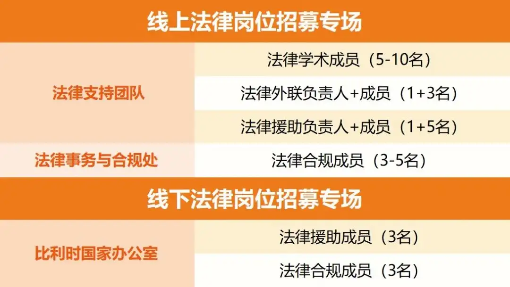
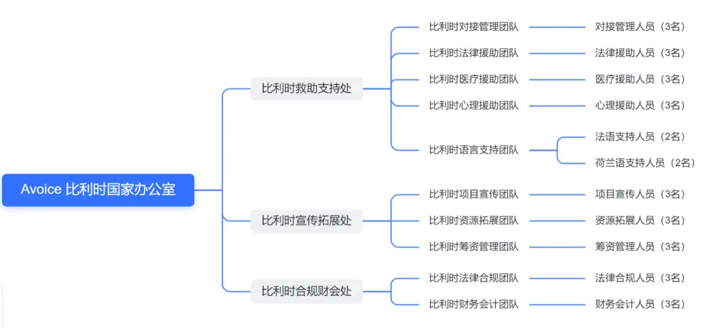

一
序言：我们是谁
项目简介
Avoice 海外华人女性保护项目
致力于消除性别暴力、促进性别平等，为面临家暴威胁的海外华侨华人女性提供充分、持续的保护和救助。项目通过与政府部门、海外华人组织、社会组织、行业专家等建立合作网络，联合更广泛的青年公益力量，倡导公众对海外华人女性生活困境的关注和支持，为她们创造安全、平等的生存和发展环境，帮助她们从家庭暴力的受害者，成长为推动性别平等与保护弱势群体的倡导者和实践者。
项目简称“Avoice”取自 Against Violence to Overseas Chinese Women Program (海外华人女性保护项目的英文名称），意为用女性之声传递发展愿景，用青年之声呼吁性别平等，以昭然赤心宣告人文理念，以不渝之志唱彻使命长歌，致力于将公益的万千发声汇入到全球推进性别平等可持续发展目标的万钧宏音中！
欢迎通过以下链接了解更多关于 Avoice 海外华人女性保护项目的信息：

“Avoice 项目”整体组织架构

二
法律岗位专项招募
随着 Avoice 项目在海外愈加深入地开展活动，我们对法律学术研究、法律外联合作、法律援助支持、以及法律合规事务等专业领域的法律专业志愿者的需求也与日俱增。
为了更好地提高 Avoice 在法律方面的专业性、促进项目规模的进一步扩大，我们决定在2022年九月中旬开始法律岗位的专项招募。
本次法律岗位专项招募长期开放，并采用滚动招募制， 先申请者享有优先录用机会，直到各岗位的成员招满为止。
线上与线下招募专场
本次专项招募分为“线上法律岗位招募专场”和“线下法律岗位招募专场”。
线上法律工作岗位面向所有国家的申请者开放，可远程工作（每周至少工作 7 小时，特殊情况可请假）；
线下法律工作岗位面向未来一年内常住比利时的申请者 开放，加入团队后须在比利时开展线下工作（每周至少工作 7 小时，特殊情况可请假）。
以下为两个专场开放的招募岗位一览：

一
线上法律岗位招募专场
01 法律支持团队
为求助女性提供法律支持，包括法律援助、普法宣传、对接法律救助资源，并开展各国反家暴法律和案例研究。
法律学术成员（5-10 名）
岗位说明：
搭建各国反家暴法律数据库；
普法手册：对各国反家暴相关的法律文献进行检索与整理，在此基础上，围绕各国对于家暴行为的认定、处罚、救济等问题制作面向当地华人群体的中文普法手册。
任职要求：
法学专业背景，需已修读民商法、刑法等基础法律课程：法学本科大三及以上，非法本研究生研二及以上。优秀的法学大二本科生也可考虑，但需提交成绩单；
优秀的学术写作能力：逻辑能力、文字表达能力优秀，具有学术规范意识。修读过”法学论文写作”及其他相关课程或具有学术写作经历者优先考虑；
英语读写能力优秀，能够进行中英互译：简历中需标明语言水平。雅思 7.0 或托福 100 以上（语言考试需提交证明文件）、具有海外留学经历、具备多语种阅读能力优先；
能够灵活运用文字处理软件，如 Microsoft Office Word、石墨文档等。
法律外联负责人+成员（1+3名）
岗位说明：
对接求助对象，为其提供外部法律支持；
搭建项目所在国法律外联资料库（法律援助方向）
识别高意向度的法律机构，对外拓展法律合作。
负责人任职要求：
就读（仅限法学研究生及以上在读）或毕业于海内外优秀大学，且能够使用英语作为工作语言；其中，工作年限 1 年以上的优先。
具有丰富的对外合作拓展经验；其中，有法律背景工作经验的优先。
具有极强的关系维护能力、合作谈判能力、领导力及问题解决能力
工作态度尽职尽责，自我驱动性高，可确保可多任务模式工作及实现高质量的跨团队协作
对性别平等、女性权益维护等性别议题具有深入了解、兴趣和热诚
能够保证每周至少 10 小时的工作时间。
成员任职要求：
就读或毕业于海内外优秀大学，且能够流利使用英语或者其他二外作为工作语言。
具有法律合作拓展经验的优先，但其他具有对外拓展合作经验的亦可。
具有较强的关系维护能力、谈判能力以及问题解决能力。
性格阳光外向，工作态度认真负责，自我驱动性高，有良好的团队协作能力。
对性别平等、女性权益维护等性别议题具有深入了解、兴趣和热诚。
法律援助负责人+成员（1+5名）
岗位说明：
对接求助对象，开展相应法律援助工作；
完善法律援助工作手册；
对法律援助案例进行研究和总结。
负责人任职要求：
有在律所、非营利组织或学校法律援助社团中进行法律援助工作的经验；热爱法律援助，富有同理心和责任心，有不指责受害者的基本法援态度；
就读或毕业于海内外优秀大学，就读或具有法学学位，本科高年级或者研究生优先；
有知名或企业法务工作或实习经历，有争议解决业务等经验的优先；
对性别平等、女性权益维护等性别议题具有深入了解、兴趣和热诚；
能够保证每周至少 10 小时的工作时间。
成员任职要求：
热爱法律援助，富有同理心和责任心，有不指责受害者的基本法援态度；
就读或毕业于海内外优秀大学，就读或具有法学学位，本科高年级或者研究生优先，优秀的法学大二本科生也可考虑；
有知名律所或企业法务工作或实习经历，有争议解决业务等经验的优先；或者有在相关非营利组织或学校法律援助社团中进行法律援助工作的经验亦可；
对性别平等、女性权益维护等性别议题具有深入了解、兴趣和热诚
02 法律事务与合规处
为 Avoice 提供法律合规服务、开展合规情况尽职调查；应 Avoice 各部门请求提供法律意见，起草、审阅各类合同和其他法律文件；参与争议解决事务。
法律合规成员（3-5名）
岗位说明：
监督外部法律顾问，协助机构在有关国家完成登记、年度检查等必要法律事务；
开展合规情况尽职调查；
设计并监督实施各部门合规管理制度；
应各部门请求提供法律意见；
起草、审阅各类合同和其他法律文件；
协助参与争议解决事务。
任职要求：
成绩优异，学习能力及理解能力强；认真踏实、有责任心、务实肯干、执行力强，有良好的团队协作精神；
-
就读或毕业于海内外优秀大学，就读法学专业或具有法学专业学位；
有国内外知名律所或企业法务工作或实习经历，有合规监管业务等经验的优先；
对非营利组织法领域有一定了解或具有高度兴趣；
能以英语作为工作语言；法语、德语等欧陆国家语言掌握者优先；
对性别平等、女性保护等性别议题具有深入了解、兴趣和热诚；
具有欧美国家法律职业资格者优先。
二
线下法律岗位招募专场
比利时国家办公室
Avoice 比利时国家办公室于 2022 年 8 月成立于比利时布鲁塞尔，是 Avoice 的第一个海外国家办公室。该办公室以比利时为中心开展线下工作，向欧洲推广项目，致力于更直接、更充分地向面临家暴及其他性别暴力威胁的海外华侨华人女性提供保护和救助。
欢迎通过以下链接了解更多关于 Avoice 比利时国家办公室的信息：
“比利时国家办公室”整体组织架构

法律援助成员（3 名）
岗位说明：
对接求助对象，开展法律援助工作，并根据具体需求，将其转介到适合的法律援助机构或者律师事务所；
编撰比利时当地法律援助工作手册；对法律援助案例进行研究和总结；协助办公室在比利时华人社区开展“反家暴”普法活动。
协助办公室进行法律相关的合作拓展，与比利时当地的法律援助机构和律师事务所建立合作关系，为求助女性建立多渠道的转介服务。
任职要求：
目前及未来一年内居住于比利时；每周可以在比利时工作至少7小时（特殊情况可请假）；
法学背景，本科高年级及研究生优先；
有国内外知名律所、企业、非盈利组织工作或实习经历的优先，有法律援助经验优先；
能以中文和英语为工作语言；荷兰语或法语掌握者优先；
富有同理心和责任心、友善耐心、真诚谦虚地对待求助者；具有良好的团队意识、沟通能力和时间管理能力，平等友善地对待团队里的其他成员。
法律合规成员（3 名）
岗位说明：
开展比利时当地合规情况尽职调查；应办公室负责人请求提供法律意见；起草、审阅各类合同和其他法律文件；
监督对接律所、协助机构在欧洲各国完成登记、年度检查等必要法律事务；监督对接律所、协助办公室参与争议解决事务。
任职要求：
目前及未来一年内居住于比利时；每周可以在比利时工作至少7小时（特殊情况可请假）；
法学学士学位及以上，具有比利时等欧洲国家法律职业资格者优先；
有国内外知名律所、企业、非盈利组织工作或实习经历的优先，有合规监管业务等经验的优先；
能以中文和英语为工作语言；荷兰语或法语掌握者优先；
具有良好的团队意识、沟通能力和时间管理能力，平等友善地对待团队里的其他成员。
三
工作收获
志愿者/实习证明：依据 Avoice 章程，工作 6 个月以上可申请志愿者证书，工作满 1 年的成员可获得实习证明，工作优秀的成员可以参选季度和年度优秀志愿者
资料共享：部门成员可使用 Avoice 共享资源，如各国立法数据库
成员互助：各部门由来自于国内外知名法学院校的成员组成，能够为法学生提供优秀的交流平台；同时，有需要的部门成员还可以申请 Avoice 其他部门的帮助，如心理咨询
文献署名：参加普法手册制作的成员对其制作的普法手册具有署名权；参加内外部的能力建设和交流活动
日常奖励：对于工作认真负责，考核结果优异的成员，部门内部会提供相应的内部激励（包括但不限于奶茶、小奖品等等）
得到项目专家顾问的指导和推荐信
参加志愿者线上线下团建活动
加入国际青年志愿者网络校友会
项目合作伙伴的实习、活动内推
参与性别平等、女性保护与发展、青年赋能等相关领域的课题研究
与国内外公益机构、学术机构、基金会的合作交流机会
与来自世界各地、志同道合的伙伴一起学习成长
四
申请流程
由于工作性质不同，各个法律岗位的申请流程会有些许不同，详细情况如下：
法律学术成员申请流程
01
简历筛选
02
笔试初试
候选人需在 7 日之内完成笔试，由部门负责人进行审阅，若候选人完成状况良好，则负责人将对该笔试进行细致批注，并由 HR 将笔试题退给候选人返修
03
笔试复试
候选人需根据部门负责人的批注，对笔试进行修订，部门负责人将根据笔试最终成果决定候选人是否通过笔试
04
录取通知
05
入职培训
法律外联/法律援助成员申请流程
01
简历筛选
02
笔试
03
面试
04
录取通知
05
入职培训
法律合规成员申请流程
01
简历筛选
02
面试
03
录取通知
04
入职培训
五
法律岗位专项招募
可扫描二维码
或通过点击文章底部“阅读原文”提交简历
六
联系方式
如对上述岗位有疑问、或是申请过程中遇到问题，请联系以下各岗位负责人：
线上法律岗位招募专场
法律学术负责人：
法律外联负责人：
法律援助负责人：
法律合规负责人：
线下法律岗位招募专场
比利时国家办公室负责人：
排版、封面制作 ｜戴翰林、游舸
内容来源｜Avoice Team